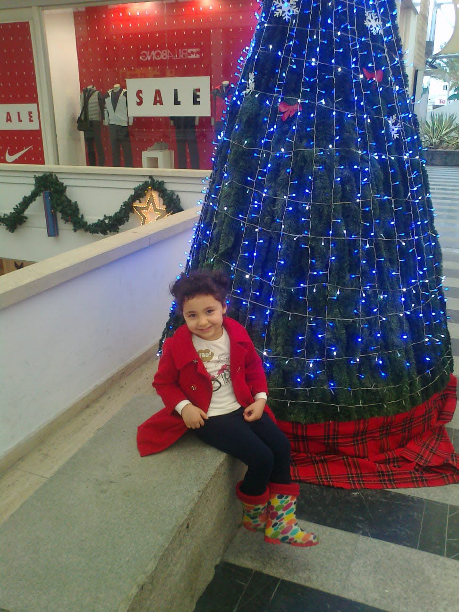

Sana dokunmak cenneti tutmak, seni görmek cennetten bir izdüşümünü izlemek. İyi ki varsın...

Senin saf ışığın hepsinden parlak. Seni her halinle seviyorum. Kalbi güzel sevgilimmm.
Galaksideki yıldızlar sadece ateş saçıyor. Benim yıldızım bana hayat enerjisi saçıyor.
Bak burada da yıldız olan Sirius var. Senden parlak değil tabiii.
Benim güneşim yanımdayken gökteki güneş batsa da hava kararmaz.
Bazıları güzelliği gökte bulur. Ben sende buldum.
Venüs etkileyici geliyor demiştim. Venüs senin etkileyiciliğinin yanında kaya yığını kalır.
Ay güzel ama o sadece kendisine gelen ışığı yansıtır. Sen kendin ışık kaynağımsın benim.
Sen sarılınca bulut gibi uçuyorum ben.
Gökteki güneş batıyor. Bana sarılıp gökyüzünü izlemek ister misin ?
↑ Yukarı Doğru Kaydır ↑